Headers
Why Do We Need Headers?
In the previous section, we saw that at Layer 3, data travels across the Internet in packets. Suppose an application wants to send a file over the Internet. We can take some bits of the image, put them in a packet, and send them over the Internet. When a switch receives this sequence of 1s and 0s, it has no idea what to do with these bits.
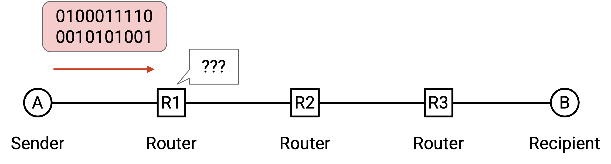
In the analogy, if I write a letter to my friend, and hand it to the post office, the post office has no idea what to do with it. Instead, we should put the letter inside an envelope, and write some information on the envelope (e.g. my friend’s address) that tells the post office what to do with the letter.
Just like the envelope, when we send a packet, we need to attach additional metadata that tells the network infrastructure what to do with that packet. This additional metadata is called a header. The rest of the bits (e.g. the file being sent, the letter inside the envelope) is called the payload.
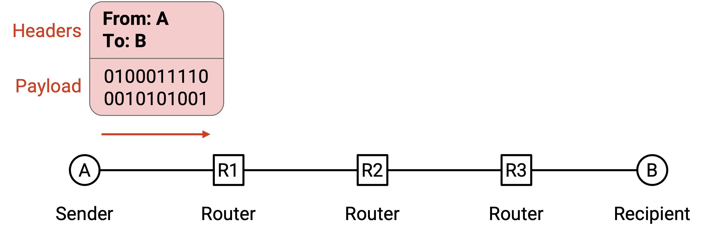
In the analogy, the post office shouldn’t be reading the contents of my letter. It should only read what’s on the envelope to decide how to send my letter. Similarly, the network infrastructure should only read the header to decide how to deliver the data.
The recipient cares about the inside of the letter, not the envelope. Similarly, the application at the end host cares about the payload, not the header. That said, the end hosts still need to know about headers, in order to add headers to packets before sending them.
Headers are Standardized
You can also think of headers as the API between the end hosts sending/receiving data, and the network infrastructure carrying the data. When we write software, we need to decide on the interface that users will use to interact with our code (e.g. what functions users can call, the parameters to those functions). Similarly, the information in the header is how users access functions and pass parameters to the network.
Everybody on the Internet (every end host, every switch) needs to agree on the format of a header. If Microsoft Windows changes the code in its operating system to send packets with a different header structure, nobody else will understand the packets being sent.
This also means we need to be careful about designing headers. Once we design a header and deploy it on the Internet, it’s very hard to change the design (we’d have to get everybody to agree to change it). This is why standards bodies can spend years designing and standardizing headers.
What Should a Header Contain?
What information should we put in the header?
The header should definitely contain the destination address, which tells us where to send the packet.
Headers could also contain other information that’s not required, but is useful to have. Technically, the source address is not required to deliver the packet, but in practice, we almost always include the source address in the header. This allows the recipient to send replies back to the sender.
The header could also include a checksum, to ensure that packet is not corrupted while in transit.
The header could also contain other metadata like the length of the packet. Note that packets can vary in size (e.g. the user might only need to send a few bytes).
Multiple Headers
Let’s go back to the postal analogy briefly. Suppose the boss of Company A wants to write a letter to the boss of Company B. How does the message get sent?
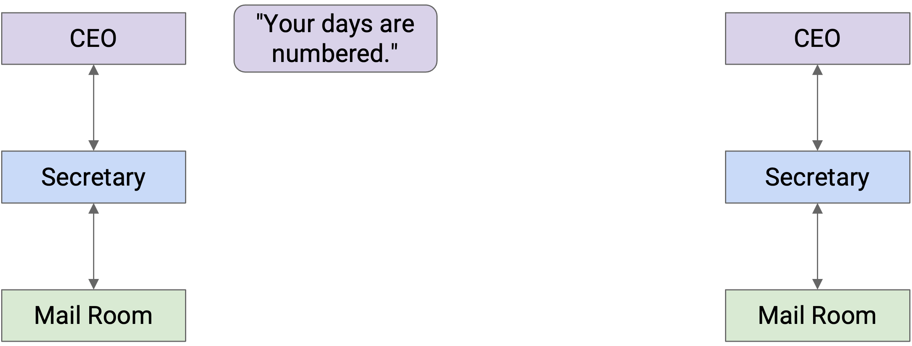
Company A’s boss folds the letter and hands it to their secretary. Then, the secretary puts the letter in an envelope with Company B’s boss’s full name.
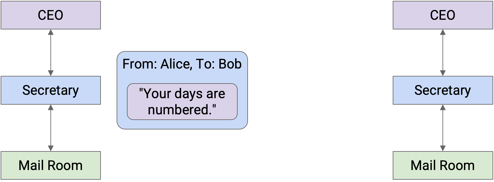
The secretary passes this letter to the mailroom. The postal worker puts the letter in a box with Company B’s street address on it, and puts the package in a delivery truck.
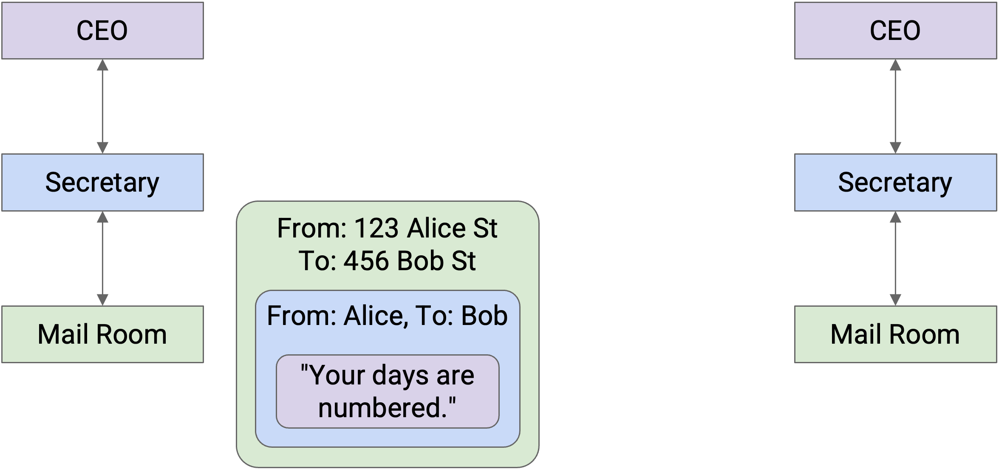
At this point, the letter itself is wrapped in multiple layers of identifying information (envelope, box). The delivery company sends the letter to Company B (possibly across several trucks, planes, mailmen, etc.).
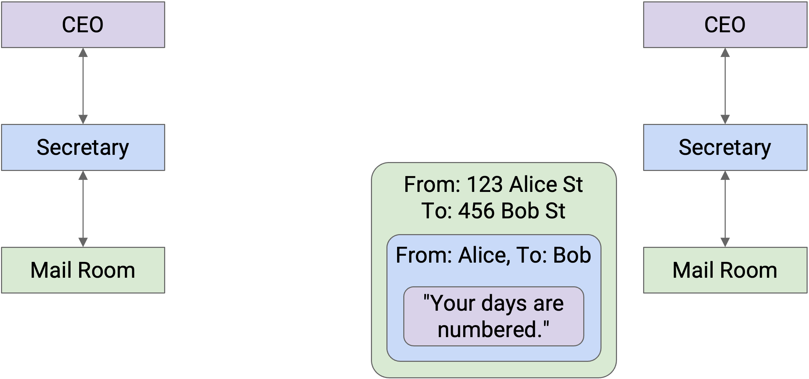
When the letter reaches Company B, the mailroom removes the box and passes the envelope to the secretary.
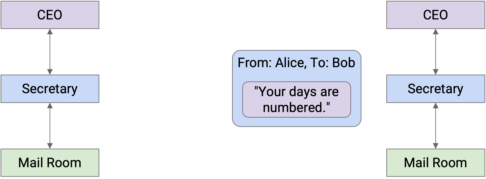
Then, the secretary sees the boss’s name on the envelope, removes the envelope, and passes the letter up to the Company B boss.
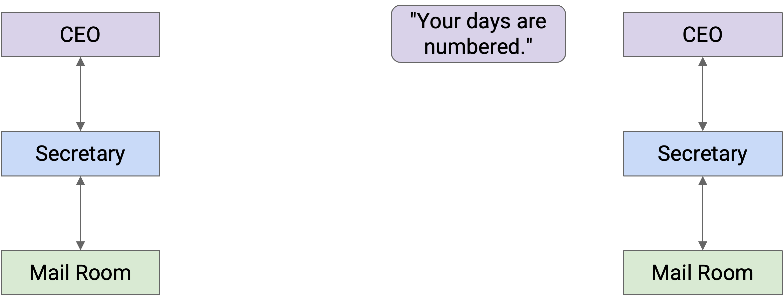
Notice that as we moved to lower abstraction layers, we wrapped more headers around the data. Then, as we moved to higher abstraction layers, we peeled layers off the data.
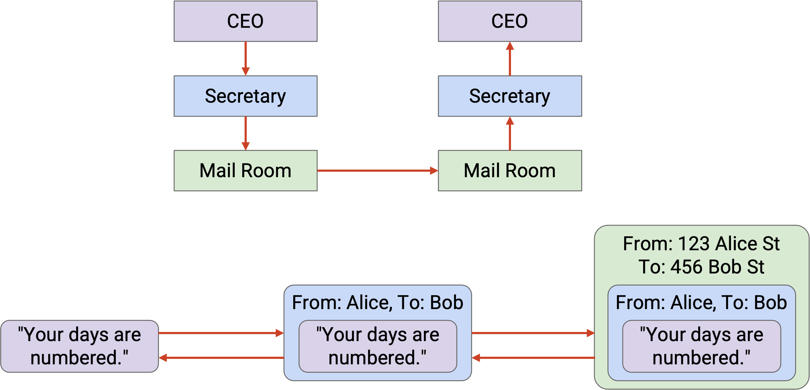
Each layer only has to understand its own header, and is “communicating” (in some sense) with its peers at the same layer. When Secretary A writes the name on the envelope, that’s meant for Secretary B to read (not the mailmen, or the boss).
More formally, on the Internet, peers at the same layer communicate by establishing a protocol at that layer. The protocol only makes sense to entities at that specific layer.
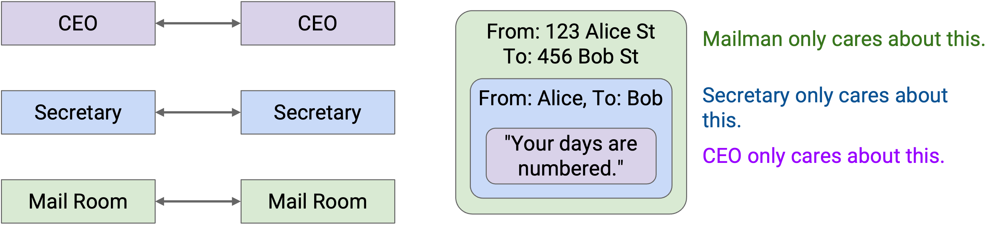
Note that some layers offer multiple choices of protocol (e.g. wireless or wired protocols at Layer 2). In these cases, the two people communicating need to use the same choice of protocol. A wired sender can’t talk to a wireless recipient.
Addressing and Naming
Earlier, we said that our headers need to contain the address of the recipient. What actually is that address? Formally, a network address is some value that tells us where a host is located in the network.
As we look at the different layers in more detail, we’ll see that different layers have different addressing schemes. If you want to send a letter inside Soda Hall, you could write the destination address as 413 Soda Hall, and the people in the building know where to deliver the letter. By contrast, if you want to send a letter to New York, you’d have to write a full street address like 123 Main Street, New York, NY.
Similarly, different layers in the Internet have different addressing schemes that work best for that particular layer. For example, sometimes a host is referred to by its human-readable name (e.g. www.google.com). Other times, that same host is referred to by a machine-readable IP address (e.g. 74.124.56.2), where this number somehow encodes something about the server’s location (and could change if the server moves). Other times, that same host could be referred to by its hardware MAC address, which never changes.
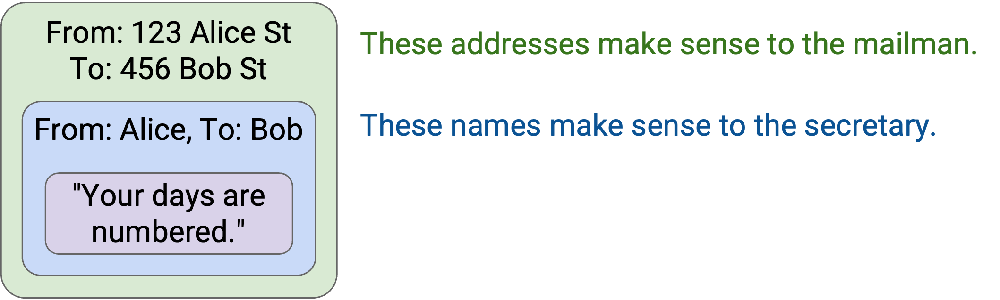
Layers at Hosts and Routers
The Internet is more than just a sender and a recipient. In addition to the two end hosts, there are routers forwarding the packet across multiple hops toward the destination. How do our ideas of layering and headers interact across all these machines?
The end hosts need to implement all the layers. Your computer needs to know about Layer 7 to run a web browser. Your computer also needs to know about Layer 1 to send the bits out along the wire. You’ll also need all the layers in between in order for application-level data (the boss’s letter) to be passed all the way down to the physical layer.
What about routers? The router does need Layer 1 for receiving bits on a wire, Layer 2 for sending packets along the wire, and Layer 3 for forwarding packets in the global network. However, the routers don’t really need to think about Layer 4 and Layer 7. The router isn’t running a web browser to display webpages, and the router doesn’t need to think about reliability (recall, best-effort service model).
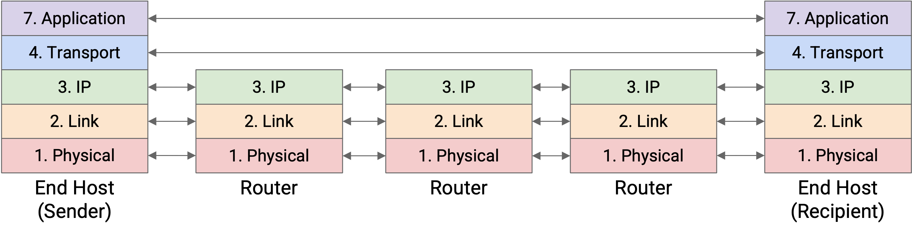
In summary: The lower 3 layers are implemented everywhere, but the top 2 layers are only implemented at the end hosts.
Multiple Headers at Hosts and Routers: Analogy
Let’s think about sending mail again. Company A wrapped the letter in an envelope, which was then put in a box. The box doesn’t magically travel to Company B. In fact, it might travel through several post offices.
At each post office, the mailman opens the box and sorts through the mail. The mailman looks at the envelope (the next header revealed after opening the box), and sees that the envelope is meant for Company B.
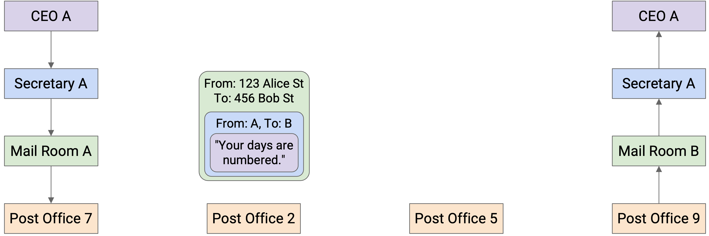
The mailman then puts the envelope in another box, possibly different, so that the letter can reach the next post office on the way to Company B.
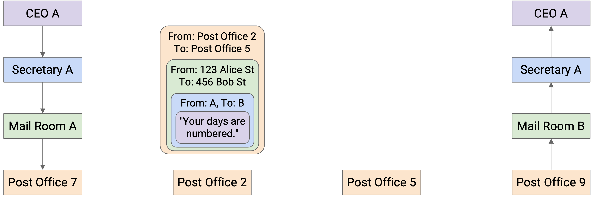
This process repeats at every post office. The box is opened, revealing the envelope inside. Then, the envelope goes in a new box, destined for the next post office. Notice that none of the post offices open the envelope to reveal the letter inside, because they don’t need to read it.
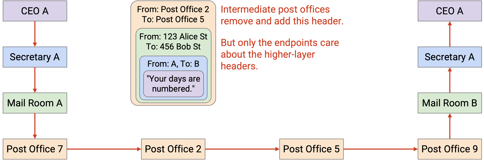
Eventually, the letter reaches Company B in a box, and this time, Company B opens the box, and the envelope, to reveal the letter inside.
Multiple Headers at Hosts and Routers
Now that we have the full picture with hosts and routers, let’s revisit the demo of wrapping and unwrapping headers, as the packet takes multiple hops across the network.
First, Host A takes the message and works its way down the stack, adding headers for Layer 7, 4, 3, 2, and 1. We now have a packet wrapped with headers for every layer.
The Layer 1 protocol sends the bits of this packet along the wire, to the first router on the way to the destination.
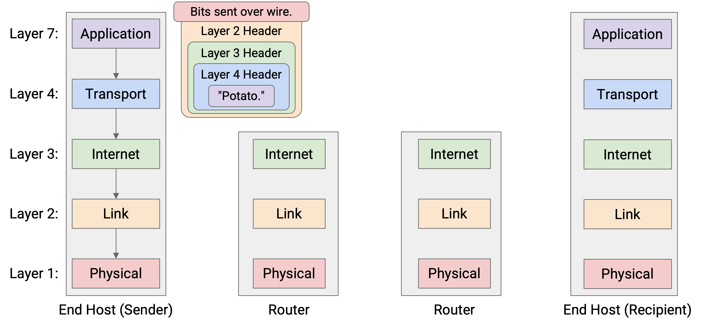
This router must forward the packet to the next hop, so that the packet eventually reaches Host B. We know that forwarding packets in the global network is a Layer 3 job. Therefore, the router must parse this packet up to Layer 3.
The router reads and unwraps the Layer 1 and Layer 2 headers, revealing the Layer 3 header underneath. The router reads this header to decide where to forward the packet next.
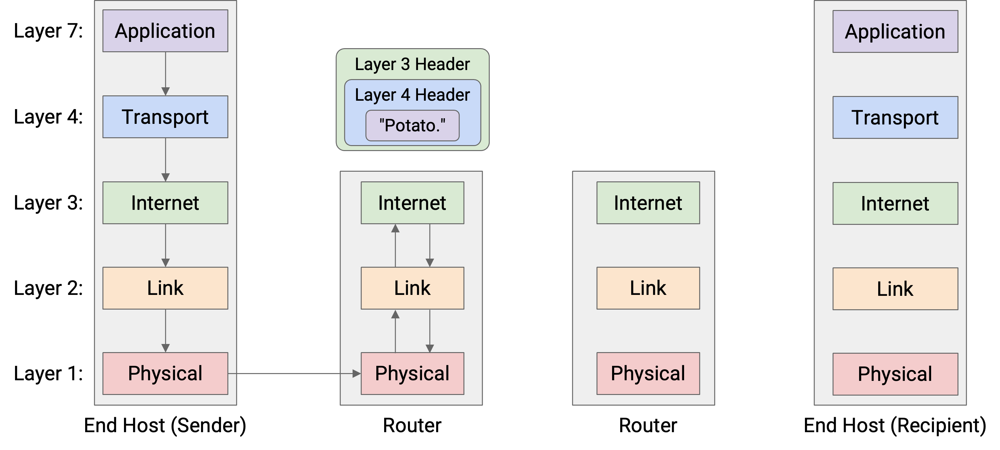
Now, to pass the packet along to the next hop, the router must go down the stack again, wrapping new Layer 2 and Layer 1 headers, and then sending the bits along the wire to the next hop.
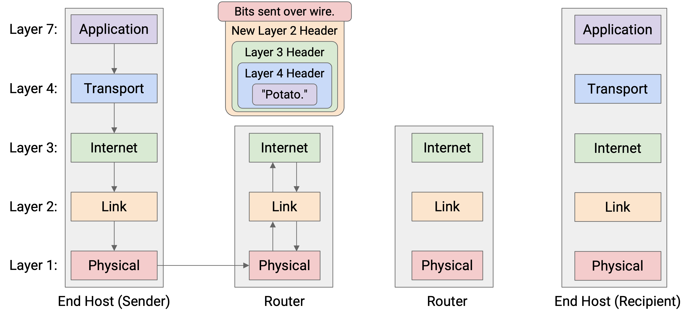
This pattern repeats at every router: Layers 1 and 2 are unwrapped to reveal the Layer 3 header, and then new Layer 2 and Layer 1 headers are wrapped before sending the packet to the next hop. Notice that none of the routers look beyond the Layer 3 protocol, because the upper layers are only parsed by the end hosts.
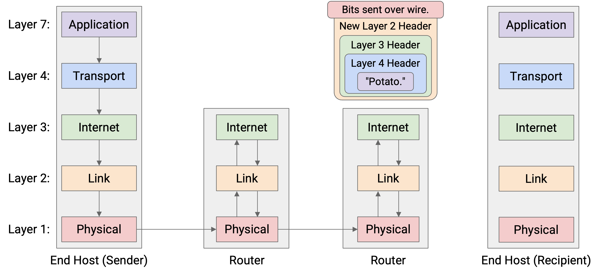
Eventually, the packet reaches Host B, who unwraps every layer, one by one: Layer 1, 2, 3, 4, 7. Host B has successfully received the message!
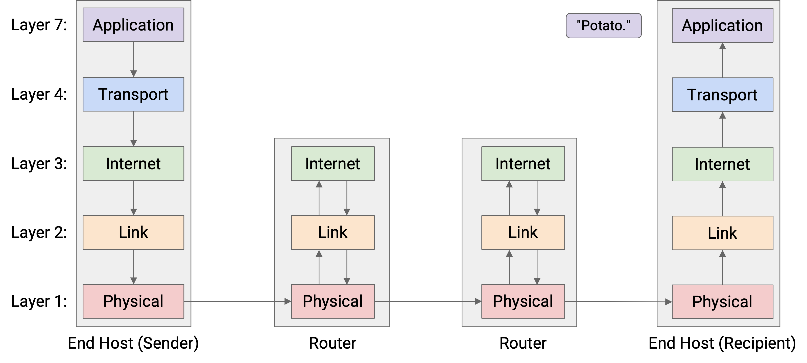
One consequence of this layering scheme is that each hop can use different protocols at Layer 2 and 1. For example, the first hop could get sent along a wire, and the initial Layer 2 and 1 headers used by Host A and the first router can be for a wired protocol. By contrast, a later hop could get sent along a wireless link, and the Layer 2 and 1 headers used by the routers on either end of that hop can be for a wireless protocol.
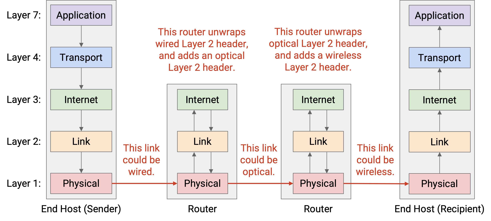
More generally, we said that each layer only needs to communicate with its peers at the same layer. We can now see this at play across all the layers. At Layers 4 and 7, the two hosts must speak the same protocols to send and receive packets. The host’s peer is the other host.
By contrast, at Layers 1 and 2, the router must speak the same protocol as the previous-hop and the next-hop router, so that the router can receive packets from the previous hop and send packets to the next hop. The router’s peers are its neighboring routers along the path.
In summary: Each router parses Layers 1 through 3, while the end hosts parse Layers 1 through 7.
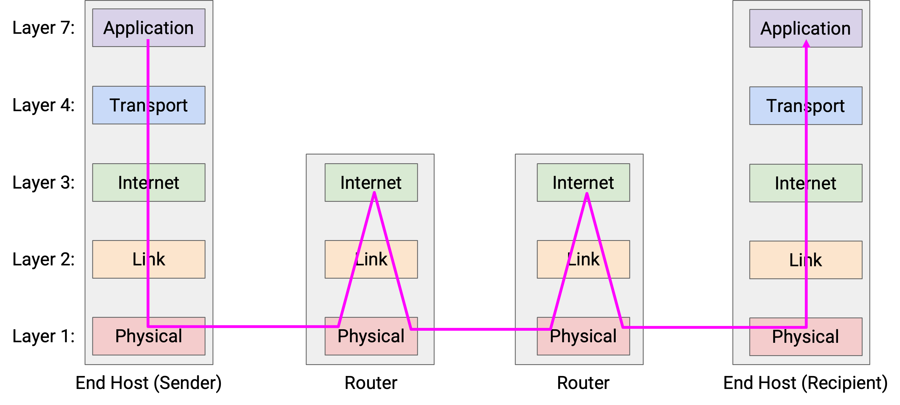